일반기계기사 (2014-03-02 기출문제)
1과목: 재료역학
1. 그림과 같은 외팔보에서 집중하중 P = 50kN이 작용할 때 자유단의 처짐은 약 몇 cm 인지 구하시오. (단, 탄성계수 E = 200 GPa, 단면2차모멘트 I = 105cm4이다.)
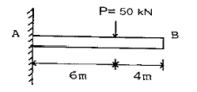
- 6.4
- 4.8
- 3.6
- 2.4
(정답률: 52%)

2. 무게가 100 N의 강철 구가 그림과 같이 매끄러운 경사면과 유연한 케이블에 의해 매달려 있다. 케이블에 작용하는 응력은 몇 MPa 인지 구하시오. (단, 케이블의 단면적은 2cm2이다.)
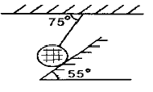
- 0.436
- 5.12
- 4.36
- 51.2
(정답률: 35%)
3. 폭 b = 3cm, 높이 h = 4cm의 직사각형 단면을 갖는 외팔보가 자유단에 그림에서와 같이 집중하중을 받을 때 보 속에 발생하는 최대전단응력은 몇 N/cm2인지 구하시오
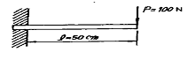
- 12.5
- 13.5
- 14.5
- 15.5
(정답률: 60%)
4. 지름 d인 강봉의 지름을 2배로 했을 때 비틀림 강도는 몇 배가 되는지 구하시오.
- 2배
- 16배
- 8배
- 4배
(정답률: 56%)
5. 강재 중공축이 25kN·m의 토크를 전달한다. 중공축의 길이가 3m이고, 허용전단응력이 90MPa이며, 축의 비틀림 각이 2.5°를 넘지 않아야 할 때 축의 최소 외경과 내경을 구하면 각각 약 몇 mm인지 구하시오. (단, 전단탄성계수는 85 GPa이다.)
- 133, 112
- 136, 114
- 140, 132
- 146, 124
(정답률: 44%)
6. 축방향 단면적 A인 임의의 재료를 인장하여 균일한 인장 응력이 작용하고 있다. 인장방향 변형률이 ε, 포아송의 비를 v라 하면 단면적의 변화량은 약 얼마인지 구하시오.(오류 신고가 접수된 문제입니다. 반드시 정답과 해설을 확인하시기 바랍니다.)
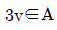
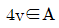
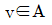
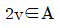
(정답률: 45%)
7. 지름 7mm, 길이 250mm인 연강 시험편으로 비틀림 시험을 하여 얻은 결과, 토크 4.08N ㆍ m에서 비틀림 각이 8°로 기록되었다. 이 재료의 전단탄성계수는 약 몇 GPa인지 구하시오.
- 31
- 41
- 53
- 64
(정답률: 54%)
8. 선형 탄성 재질의 정사각형 단면봉에 500kN의 압축력이 작용할 때 80MPa의 압축응력이 생기도록 하려면 한 변의 길이를 몇 cm로 해야 하는지 구하시오.
- 5.9
- 3.9
- 7.9
- 9.9
(정답률: 59%)
9. 단면적이 4cm2인 강봉에 그림과 같이 하중을 작용할 때 이 봉은 약 몇 cm 늘어나는지 구하시오. (단, 탄성계수 E = 210GPa 이다.)
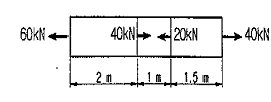
- 0.0028
- 0.24
- 0.80
- 0.015
(정답률: 53%)
10. 그림과 같은 단면의 x-x축에 대한 단면 2차 모멘트는?
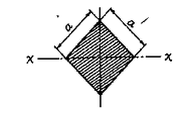
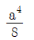
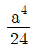
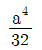
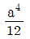
(정답률: 52%)
11. 그림과 같은 부정정보의 전 길이에 균일 분포하중이 작용할 때 전단력이 0이 되고 최대 굽힘모멘트가 작용하는 단면은 B단에서 얼마나 떨어져 있는가?
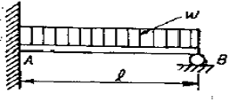
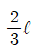
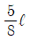
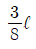
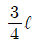
(정답률: 52%)
12. 그림과 같은 단면을 가진 A, B, C의 보가 있다. 이 보들이 동일한 굽힘모멘트를 받을 때 최대 굽힘응력의 비로 옳은 것은 어느 것인가?
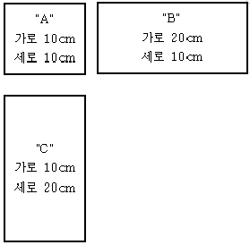
- A:B:C = 9:3:1
- A:B:C = 16:4:1
- A:B:C = 4:2:1
- A:B:C = 3:2:1
(정답률: 56%)
13. 보의 임의의 점에서 처짐을 평가할 수 있는 방법이 아닌 것은?
- 변형에너지법(Strain energy method) 사용
- 중첩법(Method of superposition) 사용
- 불연속 함수(Discontinuity function)사용
- 시컨트 공식(Secant fomula) 사용
(정답률: 47%)
14. 그림과 같은 보가 분포하중과 집중하중을 받고 있다. 지점 B에서의 반력의 크기를 구하면 몇 kN인가?
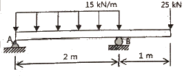
- 28.5
- 40.0
- 52.5
- 55.0
(정답률: 55%)
15. 강재 나사봉을 기온이 27℃일 때에 24 MPa의 인장 응력을 발생시켜 놓고 양단을 고정하였다. 기온이 7℃로 되었을 때의 응력은 약 몇 MPa 인가? (단, 탄성계수 E=210 GPa, 선팽창계수α = 11.3×10-6/℃이다.)
- 47.46
- 23.46
- 71.46
- 65.46
(정답률: 25%)
16. 그림과 같은 삼각형 단면을 갖는 단주에서 선 A-A를 따라 수직 압축 하중이 작용할 때 단면에 인장 응력이 발생하지 않도록 하는 하중 작용점의 범위(d)를 구하면? (단, 그림에서 길이 단위는 mm이다.)
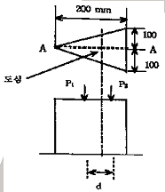
- 25 mm
- 75 mm
- 50 mm
- 100 m
(정답률: 23%)
17. 평면응력 상태에서 σx300 MPa, σy-900MPa, = 450MPa, Txy일 때 최대 주응력은 은 몇 MPa 인가?
- 300
- 750
- 450
- 1150
(정답률: 49%)
18. 그림과 같은 외팔보에서 고정부에서의 굽힘모멘트를 구하면 약 몇 kN ㆍ m 인가?
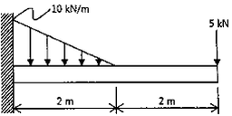
- 26.7(반시계방향)
- 26.7(시계방향)
- 46.7(반시계방향)
- 46.7(시계방향)
(정답률: 48%)
19. 아래와 같은 보에서 C점(A에서 4m 떨어진 점)에서의 굽힘모멘트 값은?
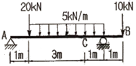
- 5.5 kN ㆍ m
- 13 kN ㆍ m
- 11 kN ㆍ m
- 22 kN ㆍ m
(정답률: 40%)
20. 그림과 같이 지름 50mm의 연강봉의 일단을 벽을 고정하고, 자유단에는 50cm 길이의 레버 끝에 600N의 하중을 작용시킬 때 연강봉에 발생하는 최대주응력과 최대전단응력은 각각 몇 MPa 인가?
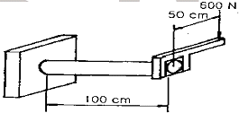
- 최대주응력 : 51.8
최대전단응력 : 27.3 - 최대주응력 : 27.3
최대전단응력 : 51.8 - 최대주응력 : 41.8
최대전단응력 : 27.3 - 최대주응력 : 27.3
최대전단응력 : 41.8
(정답률: 23%)
2과목: 기계열역학
21. 저온실로부터 46.4kW의 열을 흡수할 때 10kW의 동력을 필요로 하는 냉동기가 있다면, 이 냉동기의 성능계수는?
- 4.64
- 46.4
- 56.5
- 5.65
(정답률: 59%)
22. 교축과정(throttling process)에서 처음 상태와 최종 상태의 엔탈피는 어떻게 되는가?
- 처음 상태가 크다.
- 경우에 따라 다르다.
- 같다
- 최종 상태가 크다.
(정답률: 57%)
23. 500W의 전열기로 4kg의 물을 20℃에서 90℃까지 가열하는데 몇 분이 소요되는가? (단, 전열기에서 열은 전부 온도 상승에 사용되고 물의 비열은 4180J/kg ㆍ K이다.)
- 16
- 27
- 39
- 45
(정답률: 55%)
24. 두께 10mm, 열전도율 15W/mㆍ℃인금속판의 두 면의 온도가 각각 70℃와 50℃일 때 전열면 1m2당 1분 동안에 전달되는 열량은 몇 kJ인가?
- 1800
- 92000
- 14000
- 162000
(정답률: 55%)
25. 냉매 R-134a를 사용하는 증기-압축 냉동사이클에서 냉매의 엔트로피가 감소하는 구간은 어디인가?
- 팽창구간
- 압축구간
- 증발구간
- 응축구간
(정답률: 44%)
26. 절대온도 T1 및 T2의 두 물체가 있다. T1에서 T2로 열량 Q가 이동할 때 이 두 물체가 이루는 계의 엔트로피 변화를 나타내는 식은? (단, T1 ＞ T1이다.)
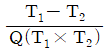
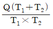
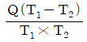
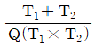
(정답률: 56%)
27. 카르노 열기관에서 열공급은 다음 중 어느 가역과정에서 이루어지는가?
- 등온팽창
- 단열압축
- 단열팽창
- 등온압축
(정답률: 38%)
28. 밀폐된 실린더 내의 기체를 피스톤으로 압축하는 동안 300kJ의 열이 방출되었다. 압축일의 양이 400 kJ이라면 내부에너지 증가는?
- 100 kJ
- 700kJ
- 400 kJ
- 300kJ
(정답률: 53%)
29. 어떤 시스템이 100 kJ의 열을 받고, 150 kJ의 일을 하였다면 이 시스템의 엔트로피는?
- 증가했다.
- 변하지 않았다.
- 감소했다.
- 시스템의 온도에 따라 증가할 수도 있고 감소할 수도 있다.
(정답률: 30%)
30. 1kg의 공기를 압력 2MPa, 온도 20℃의 상태로부터 4MPa, 온도 100℃의 상태로 변화하였다면 최종체적은 초기체적의 약 몇 배 인가?
- 0.125
- 0.637
- 3.86
- 5.25
(정답률: 56%)
31. 서로 같은 단위를 사용할 수 없는 것으로 나타낸 것은?
- 비내부에너지와 비엔탈피
- 비열과 비엔트로피
- 비엔탈피와 비엔트로피
- 열과 일
(정답률: 42%)
32. 질량(質量) 50kg인 계(系)의 내부에너지(u)가 100KJ/kg이며, 계의 속도는 100m/s이고, 중력장(重力場)의 기준면으로부터 50m의 위치에 있다고 할 때, 계에 저장된 에너지(E)는?
- 3254.2 kJ
- 4827.7 kJ
- 5274.5 kJ
- 6251.4 kJ
(정답률: 42%)
33. 온도가 -23℃인 냉동실로부터 기온이 27℃인 대기 중으로 열을 뽑아내는 가역냉동기가 있다. 이 냉동기의 성능 계수는?
- 3
- 4
- 5
- 6
(정답률: 57%)
34. 온도 300K, 압력 100 kPa 상태의 공기 0.2kg이 완전히 단열된 강체 용기 안에 있다. 패들(paddle)에 의하여 외부에서 공기에 5kJ의 일이 행해진다. 최종 온도는 얼마인가?(단, 공기의 정압비열과 정적비열은 1.0035kJ/kg ㆍ K, 0.7165 kJ/kg ㆍ K 이다.)
- 약 325 K
- 약 275 K
- 약 335 K
- 약 265 K
(정답률: 31%)
35. 공기 1kg를 1 MPa, 250℃의 상태로부터 압력 0.2MPa까지 등온변화한 경우 외부에 대하여 한 일량은 약 몇 kJ 인가? (단, 공기의 기체상수는 0.287kJ/kg ㆍ K 이다.)
- 157
- 242
- 313
- 465
(정답률: 51%)
36. 다음 중 열전달률을 증가시키는 방법이 아닌 것은?
- 2중 유리창을 설치한다.
- 엔진실린더의 표면 면적을 증가시킨다.
- 냉각수 펌프의 유량을 증가시킨다.
- 팬의 풍량을 증가시킨다.
(정답률: 53%)
37. 이상기체의 마찰이 없는 정압과정에서 열량 Q는? (단, Cv는 정적비열, Cp는 정압비열, k는 비열비, dT는 임의의 점의 온도변화이다.)
- Q = CVdT
- Q = k2CVdT
- Q = CpdT
- Q = kCpdT
(정답률: 58%)
38. 그림과 같은 공기표준 브레이튼(Brayton) 사이클에서 작동유체 1kg 당 터빈 일은 얼마인가?(단, T1 = 300K, T2 = 475.1K, T3 = 1100K, T4 = 694.5K이고, 공기의 정압비열과 정적비열은 각각 1.0035kJ/kg ㆍ K, 0.7165 kJ/kg ㆍ K이다.)
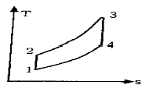
- 406.9 kJ/kg
- 290.6 kJ/kg
- 327.2 kJ/kg
- 448.3 kJ/kg
(정답률: 37%)
39. 준평형 과정으로 실린더 안의 공기를 100 kPa, 300 K 상태에서 400 kPa까지 압축하는 과정 동안 압력과 체적의 관계는 “PVn = 일정(n= 1.3)” 이며, 공기의 정적비열은 Cv= 0.717kJ/kgㆍK, 기체상수(R) = 0.287 kJ/kg ㆍ K이다. 단위질량당 일과 열의 전달량은?
- 일 = -108.2 kJ/kg
열 = -27.11 kJ/kg - 일 = -108.2 kJ/kg
열 = -189.3 kJ/kg - 일 = -125.4 kJ/kg
열 = -27.11 kJ/kg - 일 = -125.4 kJ/kg
열 = -189.3 kJ/kg
(정답률: 35%)
40. 공기는 압력이 일정할 떄 그 정압비열이 Cp = 1.0⑤3 + 0.000079t kJ/kg ㆍ ℃라고 하면 공기 5kg을 0℃에서 100℃까지 일정한 압력하에서 가열하는데 필요한 열량은 약 얼마인가?(단, t = ℃이다.)
- 100.5 kJ
- 100.9 kJ
- 502.7 kJ
- 504.6 kJ
(정답률: 42%)
3과목: 기계유체역학
41. 포텐셜 유동 중 2차원 자유와류(free vortex)의 속도 포텐셜은 ø=Kθ로 주어지고, K는 상수이다. 중심에서의 거리 r = 10m에서의 속도가 20m/s이라면 r = 5m에서의 계기압력은 몇 Pa인가? (단, 중심에서 멀리 떨어진 곳에서의 압력은 대기압이며 이 유체의 밀도는 1.2 kg/m3이다.)
- -60
- -240
- -960
- 240
(정답률: 19%)
42. 점도가 0.101N ㆍ s/m2, 비중이 0.85인 기름이 내경 300mm 길이 3km의 주철관 내부를 흐르며, 유량은 0.0444m/s3이다. 이 관을 흐르는 동안 기름 유동이 겪은 수두 손실은 약 몇 m 인가?
- 7.14
- 8.12
- 7.76
- 8.44
(정답률: 47%)
43. 지름 5cm의 구가 공기 중에서 매초 40m의 속도로 날아갈 때 항력은 약 몇 N 인가? (단, 공기의 밀도 1.23kg/m3이고, 항력계수는 0.6이다.)
- 1.16
- 3.22
- 6.35
- 9.23
(정답률: 57%)
44. 다음 중 유선의 방정식은 어느 것인가? (단,ρ :밀도, A:단면적, V:평균속도, u,v,w는 각각 x,y,z 방향의 속도이다.)
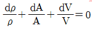
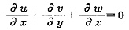
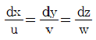
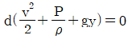
(정답률: 41%)
45. 수면차가 15m인 두 물탱크를 지름 300mm, 길이 1500m인 원관으로 연결하고 있다. 관로의 도중에 곡관이 4개 연결되어 있을 때 관로를 흐르는 유량은 몇 L/s인가? (단, 관마찰계수는 0.032, 입구 손실계수는 0.45, 출구손실계수는 1, 곡관의 손실계수는 0.17이다.)
- 89.6
- 92.3
- 95.2
- 98.5
(정답률: 26%)
46. 한 변이 2m인 위가 열려있는 정육면체 통에 물을 가득 담아 수평방향으로9.8m/s2의 가속도로 잡아 끌 때 통에 남아 있는 물의 양은 얼마인가?
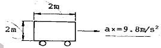
- 8m3
- 4m3
- 2m3
- 1m3
(정답률: 47%)
47. 길이 150m의 배가 8m/s의 속도로 항해한다. 배가 받는 조파 저항을 연구하는 경우, 길이 1.5m의 기하학적으로 닮은 모형의 속도는 몇 m/s인지 구하시오.
- 12
- 80
- 1
- 0.8
(정답률: 57%)
48. 점성계수μ =1.1N×10-3 ㆍ s/m2인 물이 직경 2cm인 수평원관 내를 층류로 흐를 때, 관의 길이가 1000m, 압력 강하는 8800Pa이면 유량 Q는 약 몇 m3/s인가?
- 3.14×10-5
- 3.14×10-2
- 3.14
- 314
(정답률: 50%)
49. 동점성계수의 차원을 [M]a[L]b[T]c로 나타낼 때, a+b+c의 값은?
- -1
- 0
- 1
- 3
(정답률: 46%)
50. 100m 높이에 있는 물의 낙차를 이용하여 20MW의 발전을 하기 위해서 필요한 유량은 약 m3/s 인지 구하시오. (단, 터빈의 효율은 90%이고, 모든 마찰손실은 무시한다.)
- 18.4
- 22.7
- 180
- 222
(정답률: 40%)
51. 기온이 27℃인 여름날 공기속에서의 음속은 -3℃인 겨울날에 비해 몇 배나 빠른가? (단, 공기의 비열비의 변화는 무시한다.)
- 1.00
- 1.⑤
- 1.11
- 1.23
(정답률: 53%)
52. 시속 800 km의 속도로 비행하는 제트기가 400 m/s의 상대속도로 배기가스를 노즐에서 분출할 때의 추진력은? (단, 이 때 흡기량은 25kg/s이고, 배기되는 연소가스는 흡기량에 비해 2.5% 증가하는 것으로 본다.)
- 7340 N
- 4694 N
- 4870 N
- 3920 N
(정답률: 41%)
53. 2h 떨어진 두 개의 평행 평판 사이에 뉴턴 유체의 속도 분포가 u=u0 [1-(y/h)2]와 같을 때 밑판에 작용하는 전단응력은? (단, μ는 점성계수이고, y=0은 두 평판의 중앙이다.)
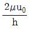
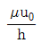
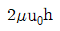
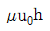
(정답률: 39%)
54. 절대압력 700kPa의 공기를 담고 있고 체적은 0.1m3, 온도는 20℃인 탱크가 있다. 순간적으로 공기는 밸브를 통해 바깥으로 단면적 75mm2를 통해 방출되기 시작한다. 이 공기의 유속은 310m/s이고, 밀도는 6kg/m3이며 탱크 내의 모든 물성치는 균일한 분포를 갖는다고 가정한다. 방출하기 시작하는 시각에 탱크 내 밀도의 시간에 따른 변화율은 몇 kg/(m3 ㆍ s) 인가?
- -12.338
- -2.582
- -20.381
- -1.395
(정답률: 29%)
55. 다음 중 유량 측정과 직접적인 관련이 없는 것은?
- 오리피스(Orifice)
- 벤투리(Venturi)
- 부르돈관(Bourdon tube)
- 노즐(Nozzle)
(정답률: 50%)
56. 비중 0.85인 기름의 자유표면으로부터 10m 아래에서의 계기압력은 약 몇 kPa인가?
- 83
- 830
- 98
- 980
(정답률: 54%)
57. 점성력에 대한 관성력의 비로 나타내는 무차원 수의 명칭은?
- 레이놀즈 수
- 웨버 수
- 푸루드 수
- 코우시 수
(정답률: 61%)
58. 관내의 층류 유동에서 관마찰계수 f는?
- 조도만의 함수이다.
- 레이놀즈수만의 함수이다.
- 상대조도와 네이놀즈수의 함수이다.
- 오일러수의 함수이다.
(정답률: 57%)
59. 다음 후류(wake)에 관한 설명 중 옳은 것은?
- 표면마찰이 주원인이다.
- 압력이 높은 구역이다.
- 박리점 후방에서 생긴다.
- (dp/dx)＜0인 영역에서 일어난다.
(정답률: 54%)
60. 분수에서 분출되는 물줄기 높이를 2배로 올리려면 노즐로 공급되는 게이지 압력을 몇 배로 올려야 하는가? (단, 이곳에서의 동압은 무시한다.)
- 1.414
- 2
- 2.828
- 4
(정답률: 50%)
4과목: 기계재료 및 유압기기
61. 게이지강이 갖추어야 할 조건으로 틀린 것은?
- 내마모성이 크고, HRC55 이상의 경도를 가질 것
- 담금질에 의한 변형 및 균열이 적을 것
- 오랜 시간 경과하여도 치수의 변화가 적을 것
- 열팽창계수는 구리와 유사하여 취성이 좋을 것
(정답률: 71%)
62. 미하나이트 주철(Meehanite cast iron)의 바탕ㅇ조직은?
- 시멘타이트
- 펄라이트
- 오스테나이트
- 페라이트
(정답률: 46%)
63. 내열성과 인성이 좋고 강한 충격이 가해지는 곳에 적합한 스프링강계는?
- 고탄소
- 망간-크롬
- 규소-크롬
- 크롬-바나듐
(정답률: 44%)
64. 마그네슘(Mg)을 설명한 것 중 틀린 것은 어느 것인가?
- 마그네슘(Mg)의 비중은 알루미늄의 약 2/3 정도이다.
- 구상흑연주철의 첨가제로도 사용된다.
- 용융점은 약 930℃로 산화가 잘된다.
- 전기전도도는 알루미늄보다 낮으나 절삭성은 좋다.
(정답률: 52%)
65. 다음 중 일반적으로 담금질에서 요구되지 않는 것은?
- 경화 깊이가 깊을 것
- 담금질 경도가 높을 것
- 담금질 균열의 발생이 없을 것
- 담금질 연화가 잘 될 것
(정답률: 49%)
66. 담금질에 의한 변형에 관한 설명 중 틀린 것은?
- 경화 상태의 불균일로 생김
- 열응력으로 생김
- 탄소함유량 변화
- 변태 응력으로 생김
(정답률: 51%)
67. 다음 중 가단주철을 설명한 것으로 가장 적합한 것은?
- 기계적 특성과 내식성, 내열성을 향상 시키기 위해 Mn, Si, Ni, Cr, Mo, V, Al, Cu 등의 합금원소를 첨가한 것이다.
- 탄소량 2.5% 이상의 주철을 주형에 주입한 그 상태로 흑연을 구상화한 것이다.
- 표면을 칠(chill)상에서 경화시키고 내부 조직은 펄라이트와 흑연인 회주철로 해서 전체적으로 인성을 확보한 것이다.
- 백주철을 고온도로 장시간 풀림해서 시멘타이트를 분해 또는 감소시키고 인성이나 연성을 증가시킨 것이다.
(정답률: 50%)
68. 순철에서 온도변화에 따라 원자배열의 변화가 일어나는 것은?
- 소성변형
- 동소변태
- 자기변태
- 황온변태
(정답률: 59%)
69. 다음 중 Mn 26.3%, Al 13% 나머지가 구리인 합금으로 강자성체인 것은?
- 스테인레스 강
- 고망간강
- 포금
- 호이슬러 합금
(정답률: 43%)
70. 다음 중 플라스틱 재료 중에서 내충격성이 가장 좋은 것은?
- 폴리스텔렌
- 폴리카보네이트
- 폴리에틸렌
- 폴리프로필렌
(정답률: 48%)
71. 그림에서 표기하고 있는 밸브의 명칭은 무엇인가?
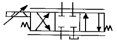
- 셔틀밸브
- 파일럿밸브
- 서보밸브
- 교축전환밸브
(정답률: 49%)
72. 일반적으로 저점도유를 사용하여 유압시스템의 온도도 60~80℃ 정도로 높은 상태에서 운전하여 유압시스템 구성기기의 이물질을 제거하는 방법은?
- 커미싱
- 플러싱
- 엠보싱
- 블랭킹
(정답률: 69%)
73. 방향전환 밸브에서 밸브와 관로가 접속되는 통로의 수를 무엇이라 하는가?
- 방수(number of way)
- 포트수(number of port)
- 위치수(number of position)
- 스풀수(number of spool)
(정답률: 69%)
74. 유압호스에 관한 설명으로 옳지 않은 것은 무엇인가?
- 진동을 흡수한다.
- 유압회로의 서지 압력을 흡수한다.
- 고압 회로로 변환하기 위해 사용한다.
- 결합부의 상대 위치가 변하는 경우 사용한다.
(정답률: 40%)
75. 유압장치에 사용되는 밸브를 압력제어밸브, 방향제어밸브, 유량제어밸브 등으로 분류하였다면, 이는 어떤 기준에 의해 분류한 것인가?
- 기능상의 분류
- 접속 형식상의 분류
- 조작 방식상의 분류
- 구조상의 분류
(정답률: 69%)
76. 유압회로의 엑추에이터(actuator)에 걸리는 부하의 변동, 회로압의 변화, 기타의 조작에 관계없이 유압 실린더를 필요한 위치에 고정하고 자유운동이 일어나지 못하도록 방지하기 위한 회로는 무엇인가?
- 중압회로
- 로크회로
- 감압회로
- 무부화회로
(정답률: 60%)
77. 다음 중 오일의 점성을 이용한 유압응용장치는?
- 압력계
- 토크 컨버터
- 진동개폐밸브
- 쇼크 업소버
(정답률: 62%)
78. 유압장치의 특징으로 옳지 않은 것은?
- 자동제어가 가능하다.
- 공기압보다 작동속도가 빠르다.
- 소형장치로 큰 출력을 얻을 수 있다.
- 유온의 변화에 따라 출력 효율이 변화 된다.
(정답률: 56%)
79. 기어펌프에서 발생하는 폐입현상을 방지하기 위한 방법으로 가장 적절한 것은?
- 베인을 교환한다.
- 오일을 보충한다.
- 릴리프 홈이 적용된 기어를 사용한다.
- 베어링을 교환한다.
(정답률: 68%)
80. 작동유 압력이 700 N/cm2이고, 유량이 30ℓ/min인 유압모터의 출력토크는 약 몇 N ㆍ m인가? (단, 1회전당 배출유량은 25cc/rev이다.)
- 28
- 42
- 56
- 74
(정답률: 28%)
5과목: 기계제작법 및 기계동력학
81. CNC선반에서 프로그램으로 사용할 수 없는 기능은 무엇인가?
- 이송속도의 선정
- 절삭속도와 주축회전수의 선정
- 공구의 교환
- 가공물의 장착, 제거
(정답률: 48%)
82. 딥 드로잉(deep drawing) 가공의 특징으로 올바르지 않은 것은?
- 큰 단면감소율을 얻을 수 있다.
- 중간에 어닐링(annealing)이 필요 없다.
- 복잡한 형상에서도 금속의 유동이 잘된다.
- 압판압력을 정확히 조정할 필요가 없다.
(정답률: 43%)
83. 평면도를 측정할 때, 가장 관계가 적은 측정기를 고르시오.
- 수준기
- 광선정반
- 오토콜리메이터
- 공구현미경
(정답률: 42%)
84. 선반에서 절삭비(cutting ratio, r)의 표현식으로 옳은 것은? (단, ø는 전단각, α는 공구 윗면 경사각이다.)
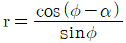
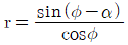
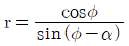
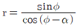
(정답률: 43%)
85. 방전가공의 특징 설명으로 올바르지 않은 것은?
- 전극 및 가공물에 큰 힘이 가해지지 않는다.
- 숙련된 전문 기술자만 할 수 있다.
- 전극의 형상대로 정밀하게 가공할 수 있다.
- 가공물의 경도와 관계없이 가공이 가능하다.
(정답률: 57%)
86. 압연공정에서 압연하기 전 원재료의 두께를 40mm, 압연 후 재료의 두께를 20mm로 한다면 압하율(draft percent)은 얼마인지 고르시오.
- 20%
- 30%
- 40%
- 50%
(정답률: 64%)
87. 방전가공의 전극 재질로 적당한 것은?
- 다이아몬드
- 구리
- 연강
- 아연
(정답률: 57%)
88. 목형에 라카나 니스 등의 도료를 칠하는 이유로 가장 올바른 이유는?
- 보기 좋게 하기 위하여
- 습기를 방지하고 모래의 분리를 쉽게하기 위하여
- 건조가 잘되게 하기 위하여
- 주물사의 강도에 잘 견디게 하기 위하여
(정답률: 61%)
89. 절삭가공을 할 때 발생하는 가공변질층에 대한 설명 중 올바르지 않은 것은?
- 가공변질층은 절삭저항의 크기에는 관계가 없다.
- 가공변질층은 내식성과 내마모성이 좋지 않다.
- 절삭온도는 가공변질층에 영향을 미친다.
- 가공변질층은 흔히 잔류응력이 남는다.
(정답률: 55%)
90. 용접의 종류 중 불활성가스 분위기 내에서 모재와 동일 또는 유사한 금속을 전극으로 하여 모재와의 사이에 아크를 발생시켜 용접하는 것을 무엇이라 하는가?
- 피복아크용접
- MIG용접
- 서브머지드 용접
- CO2가스용접
(정답률: 53%)
91. 두 파동 x1=sinωt, x2=cosωt를 합성하였을 때, 진폭과 위상각으로 바른 것은?
- 진폭은 √2, 위상각은 90°
- 진폭은 2, 위상각은 45°
- 진폭은 √2, 위상각은 60°
- 진폭은 √2, 위상각은 45°
(정답률: 42%)
92. 반경 r인 균일한 원판이 평면위에서 미끄럼없이 각속도 ω, 각가속도 α로 굴러가고 있다. 이 원판 중심점의 수평방향의 가속도 성분의 크기는 얼마인가?
- rα
- rω
- ω2/r
- α2/r
(정답률: 37%)
93. 질량 0.6kg인 강철 블록이 오른쪽으로 4m/s의 속도로 이동하고, 질량 0.9kg인 강철 블록이 왼쪽으로 2m/s의 속도로 이동하다가 정면으로 충돌하였다. 반발계수가 0.75일 때 충돌하는 동안 손실된 에너지는 약 몇 J인지 고르시오
- 2.8
- 3.8
- 6.6
- 10.4
(정답률: 20%)
94. 중량 2400N, 회전수 1500rpm인 공기 압축기가 있다. 스프링으로 균등하게 6 개소를 지지시켜 진동수비를 2.4로 할 때, 스프링 1개의 스프링 상수를 구하면 약 몇 kN/m 인지 고르시오. (단, 감쇠비는 무시한다.)
- 165
- 175
- 194
- 125
(정답률: 30%)
95. 질량 관성모멘트가 20kgㆍm20인 플라이 휠(flywheel)을 정지 상태로부터 10초 후 3600rpm으로 회전시키기 위해 일정한 비율로 가속하였다. 이 때 필요한 토크는 약 몇 Nㆍm인지 고르시오.
- 654
- 754
- 854
- 954
(정답률: 31%)
96. 그림과 같이 한 개의 움직 도르래와 한 개의 고정 도르래로 연결된 시스템의 고유 각진동수는 무엇인가? (단, 도르래의 질량은 무시한다.)
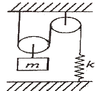
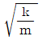
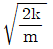
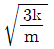
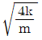
(정답률: 17%)
97. 회전하는 원판 위의 점 P에서 접선 가속도가 10m/s2, 법선 가속도가 5m/s2일 때, 이 점 P에서의 가속도 크기는 몇 m/s2인지 고르시오
- 2.2
- 3.9
- 7.1
- 11.2
(정답률: 43%)
98. 무게 10kN의 구를 위치 A에서 정지 상태로부터 놓았을 때, 구가 위치 B를 통과할 때의 속도는 약 몇 cm/s가 되겠는가?
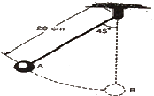
- 102
- 1⑤
- 107
- 110
(정답률: 35%)
99. 질량이 2500kg인 화물차가 수평면에서 견인되고 있다. 정지 상태로부터 일정한 가속도로 견인되어 150m를 움직였을 때, 속도가 8m/s이었다면, 화물차에 가해진 수평견인력의 크기는 약 몇 N인지 고르시오.
- 443
- 533
- 622
- 712
(정답률: 42%)
100. 다음 1자유도계의 감쇠 고유진동수는 몇 Hz인가?
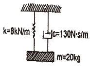
- 1.14
- 2.14
- 3.14
- 4.14
(정답률: 46%)
이제 외팔보의 처짐을 구할 수 있다. 외팔보의 처짐은 PL3/3EI로 구할 수 있다. 여기서 P는 집중하중, L은 외팔보의 길이, E와 I는 위에서 구한 값이다. 따라서 외팔보의 처짐은 50 × 3003 / (3 × 2.22 × 10-3 × 103) = 3.6 cm이다.
따라서 정답은 "3.6"이다.